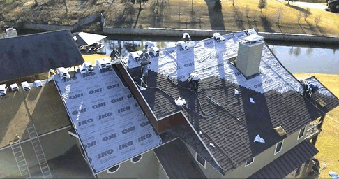
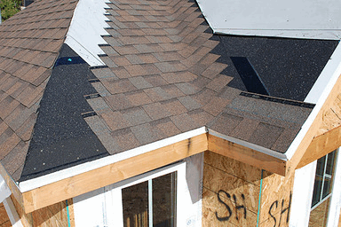

In addition to being licensed contractors, we offer a 2 year labour warranty, standing behind all our work. What's more, we're a fully insured business. We carry a minimum $2,000,000.00 liability insurance. If there's ever an incident while we are on the job, you are covered just the same as us. Our workers are all covered by WCB (Workers' Compensation Board). However, we do everything possible to prevent an incident or injury from happening by making sure all our workers have their fall protection training certification. We also have at least one certified first aid worker onsite at all times.
Employees and subcontractors at every level, including management, are responsible and accountable for the company’s overall safety initiatives. Complete and active participation by everyone, every day, in every job, is necessary for the safety among all workers on the job site.

We apply an ice and water shield to the bottom 3 feet of all eaves and in the valley areas. A synthetic felt underlayment is then installed over all sheathing. We do not leave any decking (sheathing) exposed. Other companies are known to leave the top areas or small areas open. We then add a drip edge metal along with the eave and gable edges to help protect from wind driven rain.
One of our top choice shingles is the IKO CAMBRIDGE shingles. It’s laid down with a minimum 6-inch stagger pattern (step offset). We’ve seen other companies ignore these proper minimum requirements. We will then shingle with no less than 5 nails per shingle. For winter roofing we use 6 nails. We also ensure to spread our nails so that it’s not possible for one to end up in a keyway (joint areas). Nails in this area can cause potential leaks. Many other companies do not pay attention to the nail placement.
